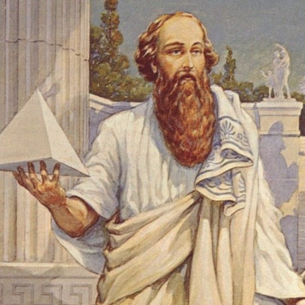
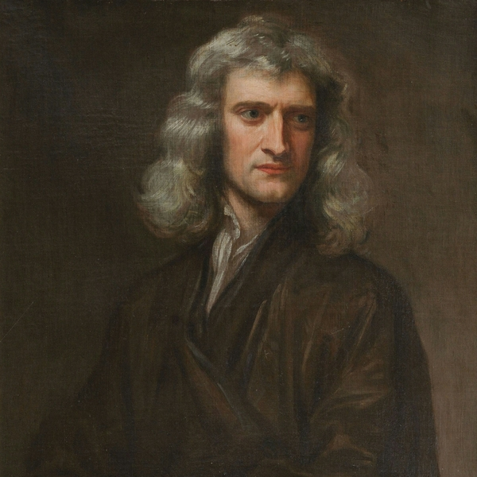
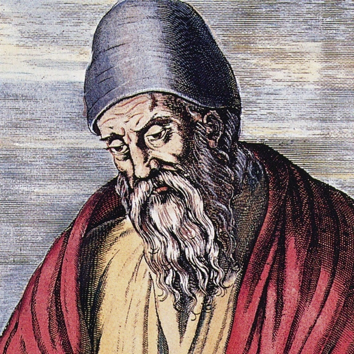
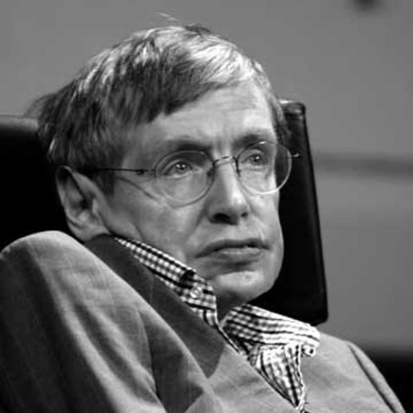
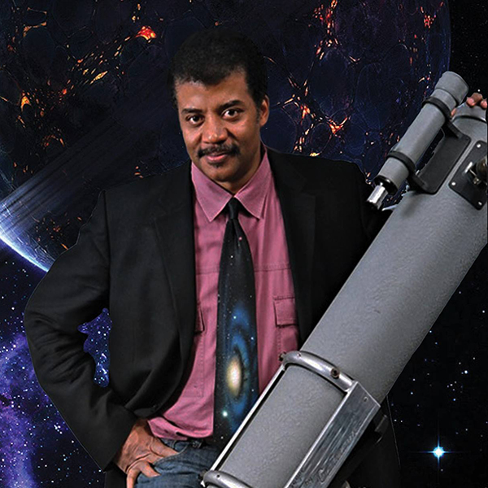
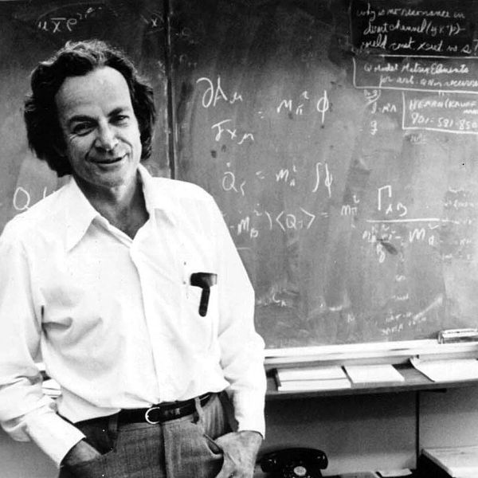
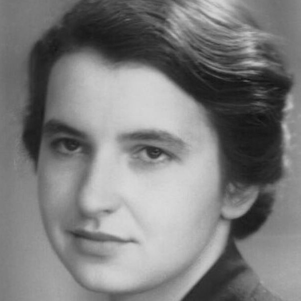
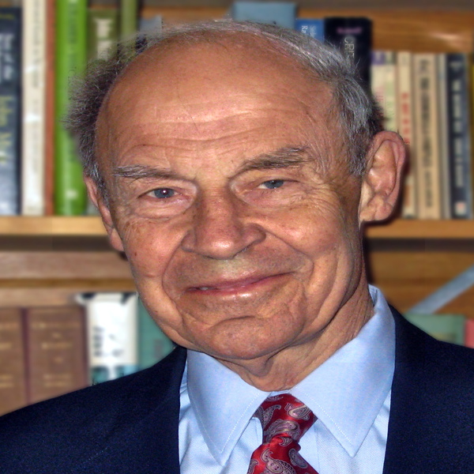
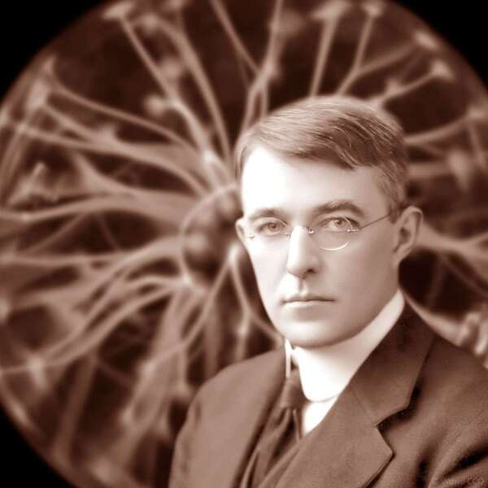

Personalitati importante:
Pitagora a fost un filozof si matematician grec din secolul VI i.Hr. El a fondat scoala pitagoreica, care a avut un impact major asupra filozofiei, matematicii si culturii antice. Ideile sale au influențat gândirea filozofica, in special in domeniul matematicii si al muzicii.
Isaac Newton a fost un matematician, fizician si astronom englez, considerat unul dintre cei mai importanti oameni de stiinta din istorie.
Euclid a fost un matematician din antichitate, cunoscut pentru opera sa "Elementele", care a servit ca text de baza pentru invatarea matematicii timp de mai multe secole.
Personalitati importante:
Stephen Hawking a fost un fizician teoretic britanic, cunoscut pentru teoriile sale privind gaurile negre si cosmologie.
Neil deGrasse Tyson este un astrofizician, cosmolog si popularizator al stiintei american, cunoscut pentru participarea sa la emisiunile televizate si cartile sale despre stiinta.
Richard Feynman a fost un fizician teoretic american, cunoscut pentru contributiile sale la fizica quantica si teoria cuantica a electromagnetismului.
Personalitati importante:
Rosalind Franklin a fost o chimista britanica si fotograf de cristale, cunoscuta pentru contributiile sale la descoperirea structurii ADN-ului.
Dudley R. Herschbach este un chimist american, castigator al Premiului Nobel pentru Chimie in 1986 pentru cercetarile sale in domeniul coliziunilor moleculare.
Irving Langmuir a fost un chimist american, castigator al Premiului Nobel pentru Chimie in 1932 pentru cercetarile sale in domeniul monstrilor de suprafata.
Sursa: Wikipedia | Teodor Adrian